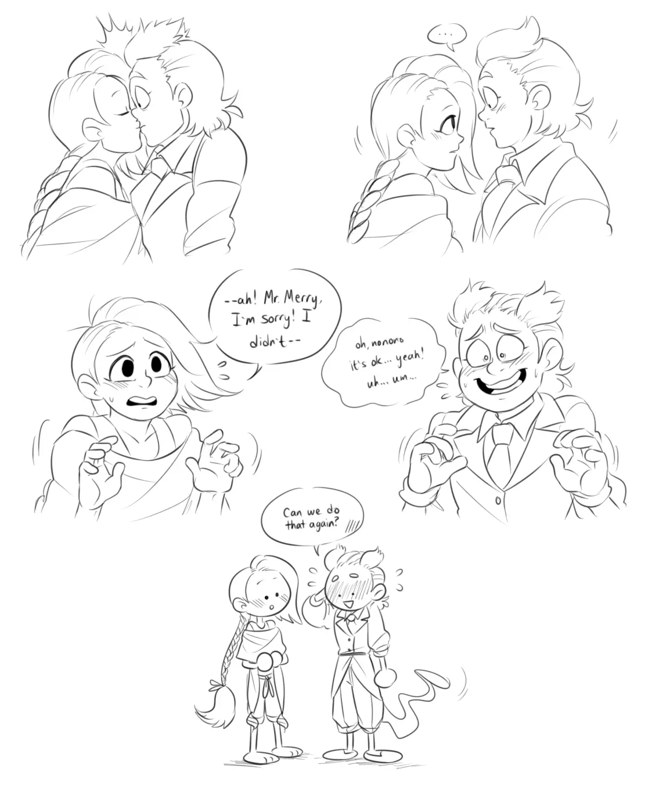
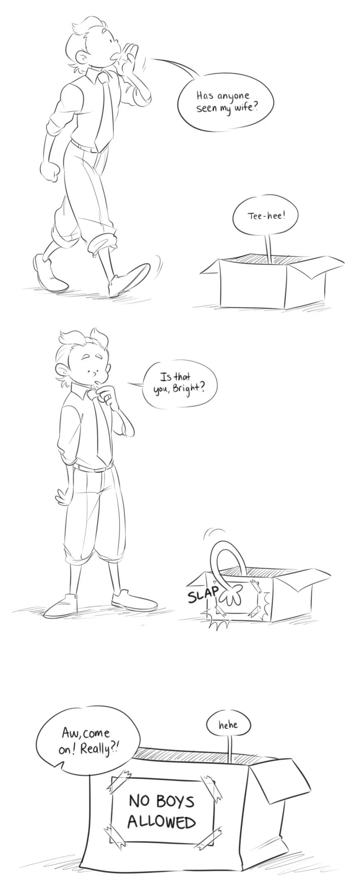

Pokémon Gijinkas
"Gijinka" comes from the Japanese word 擬人化, meaning "humanization". So, Pokémon gijinkas are humanizations of, you guessed it, Pokémon! While many artists use Pokémon gijinkas as a way to demonstrate their character design skills, there are others that also use them as original characters, and I am no exception!


Description: -chants loudly- First kiss first kiss first kiss!!! A quick comic i did of a scenario that Sam and I came up with. :3">
Description: A silly comic! Do demiboys count?">